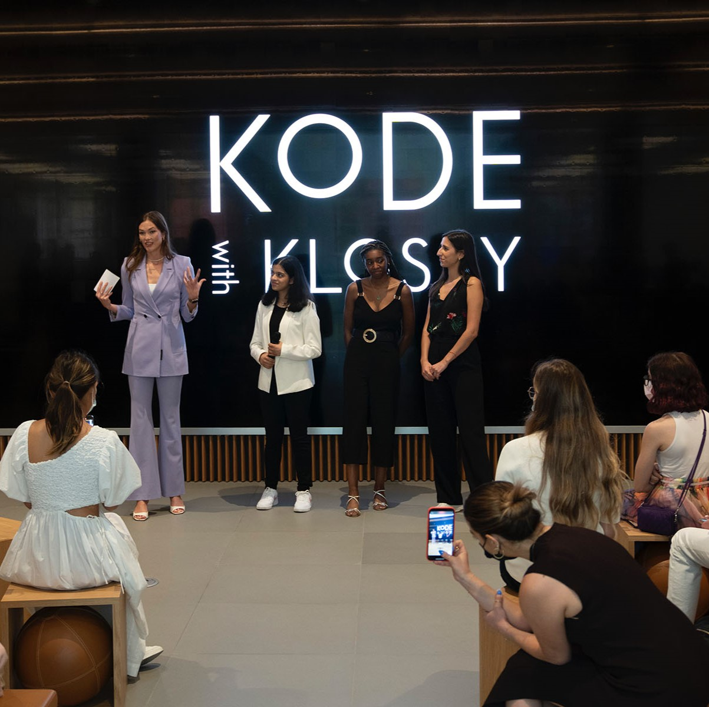
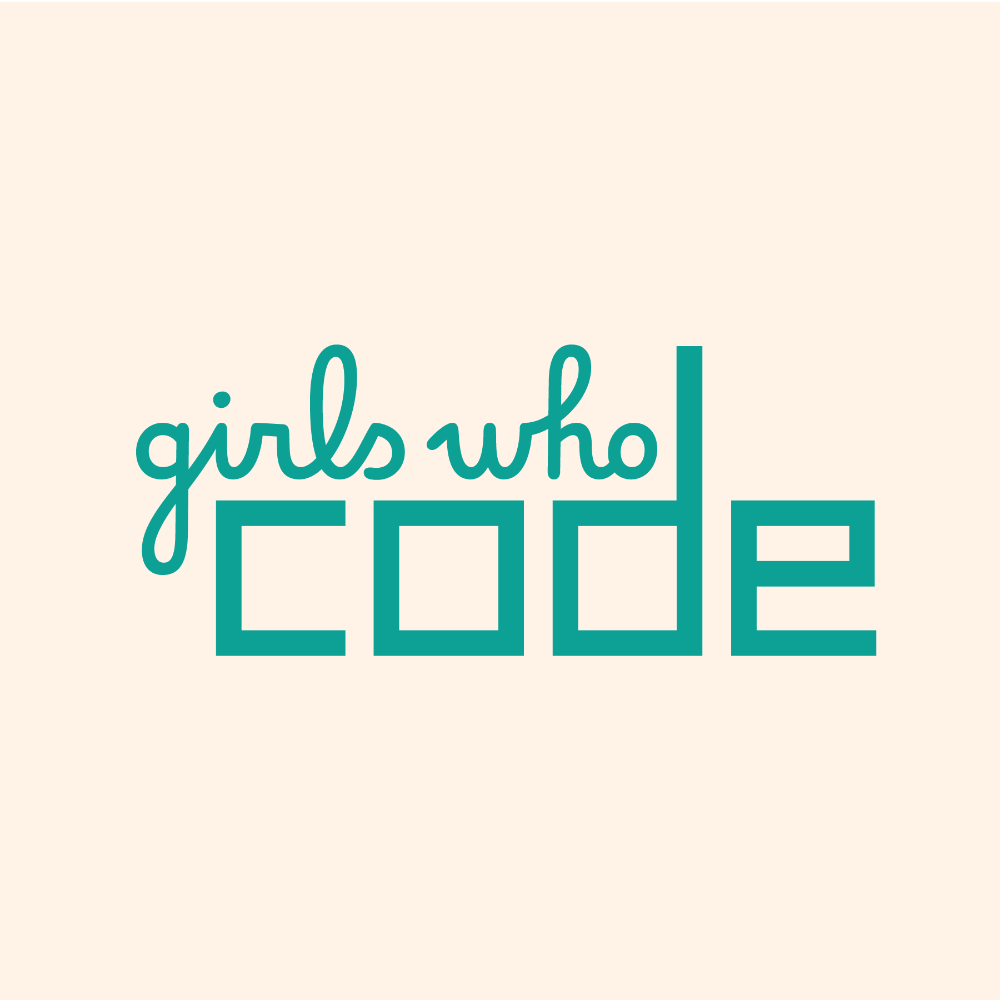

Kode With Klossy: a camp designed for women and non-binary folks aged between 13-18. Beginners are all welcome.
GDI: gives you a whole year to develop your tech skills.

Girls who code: this community provides clubs and summer progams to teach women how to code.